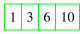
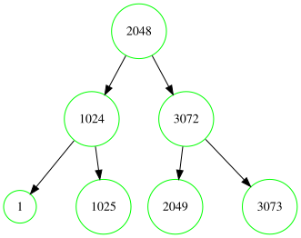
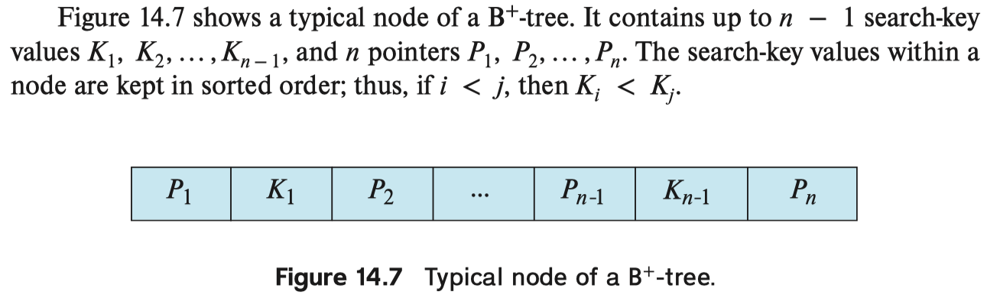
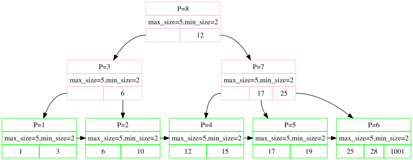

2021-09-06
Q1: 给定 有限个, 极少量 的 已排序 数组，查找某个值

naive search, O(n) 时间复杂度
Q2: 给定 有限个, 少量 的 已排序 数组，查找某个值
binary search, O(log(n)) 时间复杂度
Q3: 加个限制：可用的堆内存 8KB。
运行环境：disk page size: 4KB，int size: 32bit, 4B
当Q2的数组长度达到 4096 个 (即数组 size: 4B × 4 × 1024 = 16KB) 时，怎么查找某个值
此时：内存大小不足以完全放下所有数据了
空间换时间 → binary search tree

Q4: 当Q3的数组长度达到
10,000,000,000
时，以二叉搜索树作为搜索的数据结构，会遇到什么问题？
此时：数据会分布在约 10,000,000 个 disk page 上
Q5: 如何优化二叉树在上述问题中的缺点？
高瘦型树结构: binary tree (查找深度：log2N)
矮胖型树结构: B tree / B+ tree (查找深度：lognN)
Key有序，每个Key伴随一个Pointer，指向下一级树节点

🟥：内部节点，🟩：叶子节点

内部节点 → 内部节点 / 叶子节点，叶子节点 → 磁盘页地址
Q6: B+ tree 插入操作
插入新数据后，若节点全满：分裂
Q7: B+ tree 删除操作
删除数据后，若节点少于半满
（注意观察 page #)
Q8: B+ tree 搜索操作（查询）
与二叉搜索树相同的思想
同时，节点内二分搜索
Q9: B+ tree 如何做范围查询 (e.g. id > 10 / id ≤ 100)
叶子节点间的双向指针
Q10: 在删除节点导致「重分配」或「合并」时，如何查找 sibling 节点？
Q11: 上面讨论的假设都是 unique index key，如果要建立
index 的字段取值可重复，如 user.birthday，要怎么小小地修改一下 B+
tree ?
如：2000-01-01 生日的用户有 1000 个: user1, user2, user3, ... user1000
birthday: 2000-01-01 的叶子节点上指向一个 linked list:
user1 -> user2 -> user3 -> ... -> user1000 -> null
(birthday, id)SELECT * FROM user WHERE birthday = 2000-01-01
时，转换为范围查询
[(2000-01-01, ID_MIN), (2000-01-01, ID_MAX)]
Q12: 怎么支持多线程同时并发查询一棵 B+ tree ?
Q13: 在查找，插入，删除操作都是 随机 的情况下，怎么优化Q12的 Crab protocol ?
写操作时，在路径上从上到下查找时，都用共享锁，只在实际发生写的节点上用排它锁
如果查找过程中发现节点 不安全 , 则从根节点重试，用排它锁，即 fallback 到原先的 crab protocol 写操作
原因：当n很大时，发生分裂或合并、重分配的概率是很小的
Q14: 在对一棵B+树有高频的读写操作时，怎样在操作系统层面及计算机体系结构层面做优化？
操作系统层面：对根节点（及第一级节点，可选）做内存缓存，并标记常驻内存，使得不会被LRU换页策略驱逐出内存
体系结构层面：在存储层级上，将根节点放到更靠近CPU的地方，如CPU的L3，乃至L2缓存中
Q15: 实际使用时，n会比较大，比方说 n=256。n 的取值怎么决定，是不是越大越好，有没有什么限制？
> db.podcasts.stats()
"maximum internal page size" : 4096,
"maximum leaf page size" : 32768,
Q16: 如何节省一次叶子节点到实际读盘的IO开销，只用索引完成查询？
> db.episodes.find({ pid: 'pid1', status: 'NORMAL'}, { pid: 1, pubDate: 1, _id: 0}).explain()
"winningPlan" : {
"stage" : "PROJECTION_COVERED",
...
}